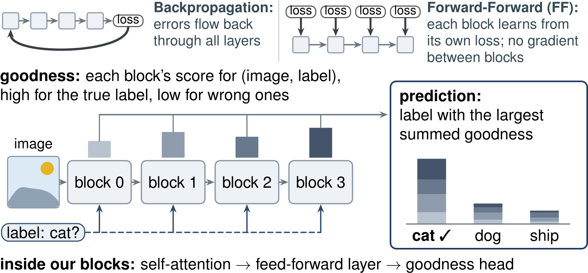
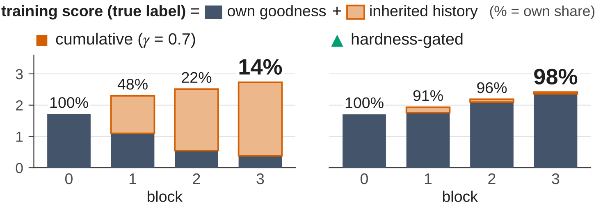
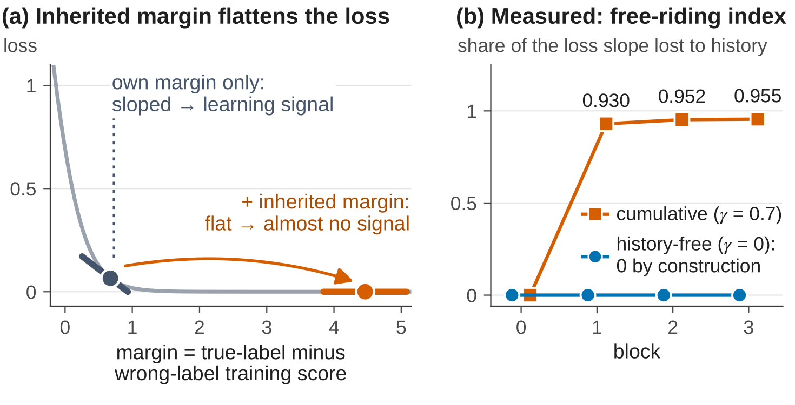
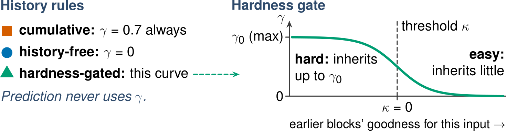
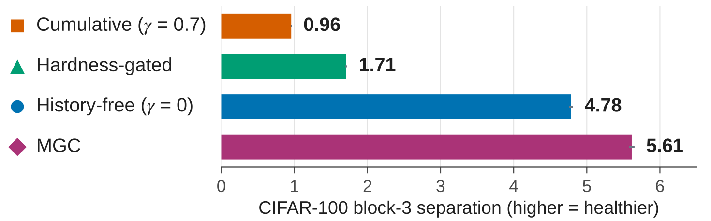
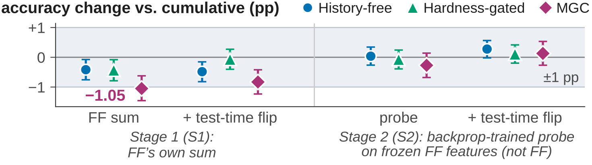
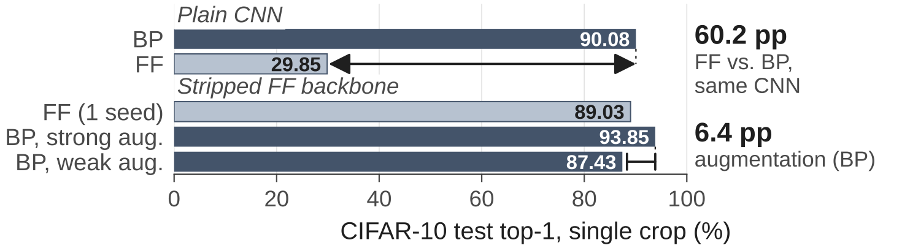
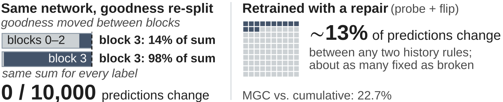
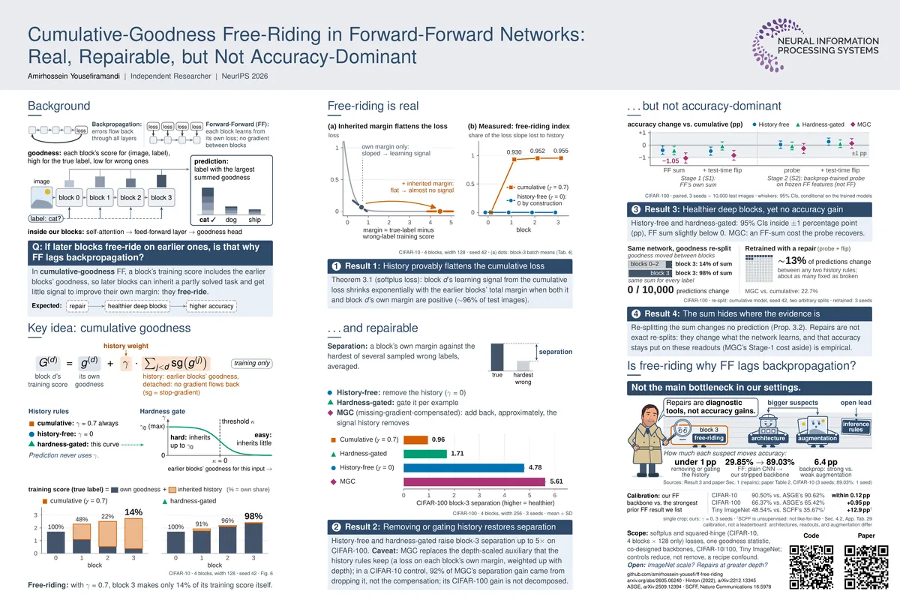
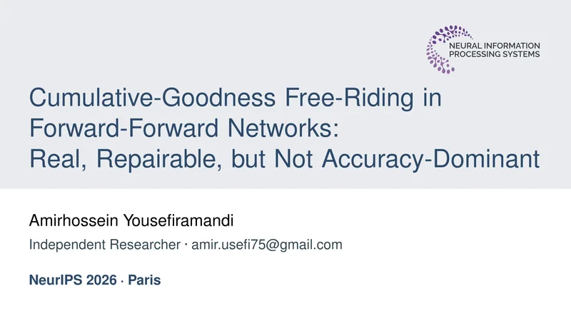

NeurIPS 2026Poster
Cumulative-Goodness Free-Riding in Forward-Forward Networks: Real, Repairable, but Not Accuracy-Dominant
Poster session · Paris Poster Hall · 14:30–16:30 CET (Paris time) Time zones and calendar
TL;DR
-
Real. Deeper blocks provably lose learning signal (Theorem 3.1).
0.930 / 0.952 / 0.955free-riding index, blocks 1–3 (γ = 0.7)Try the theorem
-
Repairable. Removing or gating the history restores separation.
up to 5×block-3 separation, CIFAR-100, 3 seedsSee the repairs
-
Not accuracy-dominant. Healthier deep blocks, yet no accuracy gain.
under 1 ppaccuracy change from removing or gating the historySee the accuracy
The claim is scoped to cumulative-goodness FF with softplus and squared-hinge barriers and to the architectures and datasets evaluated here, not to FF in general.
The central result · CIFAR-100
Healthier deep blocks, yet no accuracy gain
Block health: block-3 separation
higher = healthier
CIFAR-100 · 4 blocks, width 256 · 3 seeds · mean
Accuracy change vs. cumulative (pp)
every 95% CI inside ±1 pp
paired, 3 seeds × 10,000 test images · whiskers: 95% CIs, conditional on the trained models · Table 3
Not shown here: MGC, the theory-derived repair, has a Stage-1 cost that the probe recovers.
Explore every arm and readoutRead this first
What we show
- The attenuation is exact (Theorem 3.1) and measurable (free-riding index 0.930–0.955 at blocks 1–3 under γ = 0.7).
- Removal, gating, and the compensated objective (whose separation gain at L4/D128 comes mostly from dropping the auxiliary it replaces) restore block health and change 13–26% of test predictions, yet leave accuracy within 1 pp under the deployed rule and the structured readouts we test, except for MGC’s Stage-1 cost, which the Stage-2 probe recovers.
What we do not claim
- No verdict on the whole FF–BP gap:
we bound one candidate explanation of the FF–BP gap rather than resolve the gap.
- No accuracy gains: the repairs are
diagnostic and mechanism-isolation tools, not accuracy gains.
- Not FF in general: softplus and squared-hinge barriers, one goodness statistic, our co-designed backbones, CIFAR-10/100 and Tiny ImageNet.
Open questions (the paper’s own)
- ImageNet scale (the main open boundary) and classic FF architectures are untested.
- Whether repairs begin to matter at greater depth is open.
- How history and the depth-scaled auxiliary interact is open; alternative goodness statistics remain open.
The paper in plain words
Most modern AI systems learn with a method called backpropagation, which sends error signals backward through every layer of a network. The Forward-Forward algorithm is an alternative in which each layer learns on its own. That could make training cheaper in memory, but such networks have been less accurate. We asked whether one specific flaw explains the gap. When layers add up their scores, later layers can “free-ride”: earlier layers have already solved most of the task, so the later layers receive almost no signal to learn from. We prove why this happens and confirm it in experiments. We then repair it in several ways, including a repair derived directly from the theory. The main repairs make the later layers much healthier, yet overall accuracy does not improve, and the way the network combines its layers’ answers does not surface the difference. The flaw is real, but it is not what holds these networks back: network design and training-data preparation matter far more.
Four interactive figures
Explore the argument
- Background How cumulative goodness works Drag the history weight γ and watch each block’s training margin fill with inherited margin (Eq. 2); then compare the shares measured in trained networks.
- Result 1 Theorem 3.1, live Slide the inherited margin and watch block d’s loss slope vanish, next to the free-riding index measured per block.
- Results 2–3 Block health vs. accuracy Every repair, readout and dataset of the central comparison, plus what does move accuracy and how the FF backbone calibrates against prior FF work.
- Result 4 Re-split the sum Move goodness between blocks while every label keeps its sum: no prediction changes. Change a sum, and it can.
Background · Key idea
How cumulative goodness works
Unlike backpropagation, Forward-Forward (Hinton, 2022) gives each block its own loss, with no gradient between blocks. A block’s goodness scores an image with a candidate label: high for the true label, low for wrong ones; the margin is the gap. FF predicts the label with the largest summed goodness.
Our testbed has four blocks, each with self-attention, a feed-forward layer (a mixture of experts on CIFAR-10), and a goodness head. The label enters every block, unlike Hinton (2022). Stage 1 trains every block on its own loss, and the FF prediction sums block goodness; Stage 2 fits a readout head on the frozen features, a probe that is not part of FF. We report both.
Key idea: a training score with history
In cumulative-goodness FF, a block’s training score includes the earlier blocks’ goodness. So a later block can inherit a partly solved task and get little signal to improve its own margin: it free-rides.
Block d’s training score is its own goodness plus γ, the history weight, times the earlier blocks’ goodness, detached (sg = stop-gradient). Training only: prediction never uses γ.
γ ∈ [0, 1] weights the history. The history is detached and enters training only: at test time every variant predicts from the plain, unweighted sum of block goodness.
FF predicts the label with the largest summed goodness; no γ appears here.
We compare three history rules. Cumulative uses γ = 0.7 for every example; history-free sets it to zero. Hardness-gated sets it per example: little history where the earlier blocks’ goodness is already high, on easy examples, and up to γ0 on hard ones.
Block d’s own margin plus γ times the margins of all earlier blocks: the inherited, detached history.


Static version: the interactive figure needs JavaScript.
Show the numbers as tables
| History rule | block 0 | block 1 | block 2 | block 3 |
|---|---|---|---|---|
| cumulative (γ = 0.7) | 100% | 48% | 22% | 14% |
| hardness-gated (κ = 0) | 100% | 91% | 96% | 98% |
| history-free (γ = 0) | 100% | 100% | 100% | 100% |
| γ = 1, no auxiliary (LCFF) | 100% | 30% | 20% | 15% |
| Run | block 0 | block 1 | block 2 | block 3 |
|---|---|---|---|---|
| constant γ = 0.7 | 1.71 | 1.10 | 0.55 | 0.38 |
| hardness-gated (κ = 0, τ = 1) | 1.71 | 1.76 | 2.10 | 2.36 |
| history-free (γ = 0) | 1.70 | 1.62 | 1.74 | 1.82 |
| γ = 1, no auxiliary (LCFF) | 1.68 | 0.73 | 0.61 | 0.54 |
Glossary
- Goodness
- each block’s score for (image, label), high for the true label, low for wrong ones.
- Margin
- a block’s goodness for the true label minus its goodness for a wrong label.
- Separation
- a block’s own margin against the hardest of several sampled wrong labels, averaged (higher = healthier).
- Free-riding index
- the share of the loss slope lost to history, averaged over test images (0 = none).
- Stage 1
- FF’s own goodness sum.
- Stage 2
- a backprop-trained probe on the frozen features, not part of FF.
- Flip
- scores averaged over the image and its mirror.
- History weight γ
- 0.7 in the cumulative runs, 1 without the auxiliary (LCFF), 0 history-free.
- Hardness gate
- a per-example γ with threshold κ; the paper reports κ = 0.
- Depth-scaled auxiliary
- a loss on each block’s own margin, weighted up with depth.
- MGC (missing-gradient-compensated)
- adds back, approximately, the signal history removes.
- Names in the paper’s tables
- S1 and S2: Stage 1 and Stage 2; TTA: flip; LCFF: γ = 1, no auxiliary; CP-FAIR: cumulative (γ = 0.7) on the 32-expert CIFAR-10 model; L4/D128: 4 blocks of width 128.
Result 1
Free-riding is real
The inherited margin moves block d to the flat part of the loss, where that loss gives it almost no signal to improve its own margin.
The hardness gate: little history where the earlier blocks’ goodness is already high (easy examples), up to γ0 where it is low (hard ones).


Static version: the interactive figure needs JavaScript.
Show the numbers as tables
| Rule, block | mean m(d) | mean P(d−1) | γ · mean P(d−1) | Rd at the batch means |
|---|---|---|---|---|
| γ = 0.7, block 0 | +1.76 | +0.00 | 0.00 | 1.000 |
| γ = 0.7, block 1 | +2.36 | +1.76 | 1.23 | 7.2×10−3 |
| γ = 0.7, block 2 | +1.29 | +4.12 | 2.89 | ≤ 10−4 |
| γ = 0.7, block 3 | +0.67 | +5.41 | 3.79 | ≤ 10−6 |
| γ = 0, block 3 | +2.54 | +6.50 | 0.00 | 1.000 |
| History rule | block 0 | block 1 | block 2 | block 3 |
|---|---|---|---|---|
| cumulative (γ = 0.7) | 0 | 0.930 | 0.952 | 0.955 |
| history-free (γ = 0) | 0 | 0 | 0 | 0 |
| Condition | Block-3 separation | Stage 1 accuracy, single crop |
|---|---|---|
| hardness-gated, κ = 0, τ = 1 (reported) | 3.11 | 85.86% |
| hardness-gated, κ = 0, τ = 3 | 3.05 | 85.98% |
| hardness-gated, κ = 2, τ = 1 | 2.19 | 85.95% |
| hardness-gated, κ = 4, τ = 1 | 0.96 | 85.61% |
| constant γ = 0.7 | 0.74 | 86.18% |
| γ = 0 | 2.61 | 85.75% |
Two notes on the theorem
Deep blocks still get gradient. Theorem 3.1 concerns the cumulative discrimination term only. Under γ = 0.7 that term’s gradient share falls from 0.247 at block 0 to 0.030 at block 3, while the current-block auxiliary has the largest share at blocks 1–3 (0.52–0.72; App. B.3).
A second barrier. The squared hinge (θ = 2) reproduces free-riding: deepest-block separation 1.67 at γ = 0.7 vs. 4.44 at γ = 0, with block 0 unchanged (CIFAR-10, 4 blocks of width 128, 3 seeds; App. B.2).
Scope of the theorem. A surrogate-loss statement, not a convergence claim. If P < 0 the ratio can exceed one, so the claim is specifically about the already-separated regime.
PaperTheorem 3.1, as stated in the paper
The softplus barrier on a margin u (Eq. 3; the runs use β = 4):
Theorem 3.1 (Per-example attenuation of cumulative FF discrimination). Let P(d−1) = Σj<d m(j) and Mγ(d) = m(d) + γP(d−1), where P(d−1) is detached from the parameters θd of block d. For the softplus barrier ℓβ(u) = softplus(−βu), β > 0, define the attenuation ratio
Then, for every finite m = m(d)(θd), the parameter gradient of the cumulative loss equals that of the strictly-local loss, scaled by Rγ:
If m(d) ≥ 0, P(d−1) ≥ 0, and γ ≥ 0, then
Thus the cumulative FF discrimination gradient reaching block d is exponentially attenuated in the already-accumulated positive upstream margin. If P(d−1) < 0 the ratio can exceed one, so the claim is specifically about the already-separated regime.
The free-riding index measured in Fig. 1a (App. A):
The share of block d’s loss slope that history removes, averaged over test images (0 = none).
Remark after Theorem 3.1 (abridged only at the citations):
Equation (5) is a parameter-gradient statement … that uses only the chain rule. Hence for any barrier whose |ℓ′| is non-increasing in the accumulated margin, Rγ = |ℓ′(m+γP)|/|ℓ′(m)| ≤ 1 whenever γP ≥ 0; the barrier sets only the decay profile. For the squared hinge ℓ(u) = max(0, θ−u)2 (θ=2, m<θ), Rγ = (θ−m−γP)+/(θ−m) decays linearly to a hard zero; this barrier reproduces both free-riding (deepest-block separation 1.67 at γ=0.7 vs. 4.44 at γ=0) and the dissociation (87.08 vs. 86.93% S2 TTA; CIFAR-10 L4/D128, i.e., 4 blocks of width 128; 3 seeds). Alternative goodness statistics remain open.
Paper: Sec. 3.2 (Eqs. 3–6), App. A (proof, Fd).
Results 2–3
… and repairable, but not accuracy-dominant
Separation: a block’s own margin against the hardest of several sampled wrong labels, averaged (higher = healthier). The repairs: history-free removes the history (γ = 0); hardness-gated gates it per example; MGC (missing-gradient-compensated) adds back, approximately, the signal history removes. All three history rules carry the depth-scaled auxiliary, a loss on each block’s own margin, weighted up with depth ([0.25, 0.50, 0.75, 1.00] for blocks 0–3); MGC replaces it.
Does that help accuracy? We compare each repair with the cumulative model on the same seeds and test images. Stage 1 is FF’s own goodness sum; Stage 2, a backprop-trained probe on the frozen features, not part of FF. If free-riding limited accuracy, repairing it should help. It does not.



Static version: the interactive figure needs JavaScript.
Show the numbers as tables
| Arm | Block-3 separation | Stage 1: FF’s own sum | Stage 2: probe (not FF) | ||
|---|---|---|---|---|---|
| single crop | + flip | single crop | + flip | ||
| cumulative (γ = 0.7) | 0.96 ± 0.01 | 66.78 ± 0.28 | 67.41 ± 0.35 | 68.51 ± 0.51 | 68.96 ± 0.43 |
| hardness-gated (κ = 0) | 1.71 ± 0.01 | 66.35 ± 0.41 | 67.35 ± 0.66 | 68.44 ± 0.51 | 69.07 ± 0.61 |
| history-free (γ = 0) | 4.78 ± 0.02 | 66.37 ± 0.20 | 66.93 ± 0.14 | 68.54 ± 0.25 | 69.23 ± 0.34 |
| MGC | 5.61 ± 0.04 | 65.73 ± 0.35 | 66.58 ± 0.25 | 68.24 ± 0.51 | 69.09 ± 0.27 |
| Comparison | Stage 1: FF’s own sum | Stage 2: probe (not FF) | ||
|---|---|---|---|---|
| single crop | + flip | single crop | + flip | |
| hardness-gated − cumulative | −0.43 [−0.79, −0.08] | −0.07 [−0.40, +0.27] | −0.07 [−0.39, +0.24] | +0.11 [−0.20, +0.42] |
| history-free − cumulative | −0.42 [−0.76, −0.07] | −0.48 [−0.82, −0.15] | +0.04 [−0.26, +0.34] | +0.28 [−0.02, +0.56] |
| MGC − cumulative | −1.05 [−1.46, −0.62] | −0.83 [−1.23, −0.42] | −0.27 [−0.68, +0.14] | +0.13 [−0.27, +0.53] |
| CIFAR-10, 32 experts: cumulative − history-free (CP-FAIR − γ=0) | −0.06 [−0.35, +0.23] | +0.05 [−0.20, +0.29] | +0.03 [−0.26, +0.31] | −0.07 [−0.32, +0.19] |
| Arm | Block-3 separation | Stage 1: FF’s own sum | Stage 2: probe (not FF) | ||
|---|---|---|---|---|---|
| single crop | + flip | single crop | + flip | ||
| (a) cumulative + auxiliary | 0.75 ± 0.01 | 85.74 ± 0.37 | 86.75 ± 0.34 | 85.98 ± 0.52 | 87.04 ± 0.51 |
| (b) auxiliary removed, no compensator | 4.88 ± 0.05 | 85.31 ± 0.10 | 86.47 ± 0.04 | 85.88 ± 0.34 | 86.90 ± 0.22 |
| MGC | 5.25 ± 0.05 | 85.45 ± 0.37 | 86.87 ± 0.23 | 86.07 ± 0.38 | 87.27 ± 0.29 |
| (c) MGC + block-0 auxiliary | 5.28 ± 0.03 | 85.32 ± 0.19 | 86.53 ± 0.19 | 85.66 ± 0.25 | 86.93 ± 0.09 |
| Δ (b) − (a) | +4.13 ± 0.05 | −0.43 [−0.74, −0.12] | −0.28 [−0.54, −0.01] | −0.10 [−0.40, +0.21] | −0.14 [−0.40, +0.11] |
| Δ MGC − (a) | +4.50 ± 0.04 | −0.29 [−0.59, +0.02] | +0.13 [−0.14, +0.40] | +0.09 [−0.21, +0.40] | +0.24 [−0.02, +0.50] |
| Δ (c) − (a) | +4.54 ± 0.03 | −0.42 [−0.74, −0.12] | −0.22 [−0.49, +0.06] | −0.32 [−0.62, −0.02] | −0.11 [−0.37, +0.16] |
| Suspect | Setting | Accuracy |
|---|---|---|
| Training rule | FF, cumulative (γ = 0.7, 32 experts; 4 seeds) | 90.36 ± 0.18 |
| FF, history-free (γ = 0; 3 seeds)† | 90.50 ± 0.05 | |
| Architecture | FF on a plain CNN | 29.85 ± 0.50 |
| FF on our stripped backbone (1 seed) | 89.03% | |
| Backprop on the same plain CNN | 90.08 ± 0.28 | |
| Augmentation | Backprop on the stripped backbone, weak augmentation | 87.43 ± 0.62 |
| Backprop on the stripped backbone, strong augmentation | 93.85 ± 0.18 |
Calibration, not a leaderboard
MeasuredOur FF backbone vs. the strongest prior FF result we list · single crop; ours: γ = 0, 3 seeds
| Dataset | Our FF backbone (γ = 0, Stage 1, single crop), % | Strongest prior FF result listed | Gap |
|---|---|---|---|
| CIFAR-10 | 90.50 ± 0.05† | ASGE, 90.62% | within 0.12 pp |
| CIFAR-100 | 66.37 ± 0.20 | ASGE, 65.42% | +0.95 pp |
| Tiny ImageNet | 48.54 ± 0.19 | SCFF, 35.67% (unsupervised) | +12.9 pp |
SCFF is unsupervised: not like-for-like. Calibration, not a leaderboard: architectures, readouts, and augmentation differ. None of the listed prior FF works report test-time augmentation, so our flip and probe numbers are not in this table. Our CIFAR-10 column is the 32-expert model; CIFAR-100 and Tiny ImageNet use the dense backbone. Tiny ImageNet accuracies are on its labeled validation split. † The CIFAR-10 mean pools seed 42, trained with λcurr = λdepth = 0 (no depth-scaled auxiliary and no depth-order term), with seeds 123 and 456 (0.25 and 0.2; Sec. 4.1, App. Tab. 22).
Sec. 4.2, App. Tab. 29
Every prior FF result listed (App. Tab. 29)
| Prior FF work | CIFAR-10 | CIFAR-100 | Tiny ImageNet |
|---|---|---|---|
| Hinton (2022) | 59 | — | — |
| Lorberbom et al. (2024) | 48.4 | — | — |
| Papachristodoulou et al. (2024), CwC | 78.11 | 51.23 | — |
| Dooms et al. (2024), Trifecta | ∼84 | 35.79 | — |
| Aghagolzadeh and Ezoji (2025), CFFM | 85.37 | — | — |
| Wu et al. (2024), Distance-Forward | 88.15 | 59.01 | — |
| Sun et al. (2025), DeeperForward | 86.22 | 53.09 | — |
| Krutsylo (2025), SFF | 81.38 | 55.34 | — |
| Chen et al. (2025), SCFF (unsupervised) | 80.8 | — | 35.67 |
| Sarode et al. (2026), HFF | 83.08 | 54.34 | — |
| Gong et al. (2026), ASGE (linear readout) | 90.62 | 65.42 | — |
Does the dissociation hold elsewhere?
Four more settings
| Setting | Block health | Accuracy | Source |
|---|---|---|---|
| 8 blocks (CIFAR-10, width 128, seed 42) | block-7 separation 6.94 vs. 0.15 (hardness-gated vs. γ = 1, no auxiliary): ∼45× | 86.84% vs. 86.79% (probe + flip): +0.05 pp | App. C |
| Squared-hinge barrier (CIFAR-10, 4 blocks of width 128, 3 seeds) | 1.67 at γ = 0.7 vs. 4.44 at γ = 0 | moves at most 0.16 pp | App. B.2 |
| 8 blocks, 32 experts (one seed) | — | depth-scaled repair 89.61% vs. 89.22% and 89.20% (probe + flip): whether repairs matter at greater depth is open | Tab. 15, App. F.1 |
| Tiny ImageNet (γ = 0, 3 seeds) | separation peaks at block 1 and declines deeper, outside Theorem 3.1 | per-depth accuracy rises with every block: 35.71%, 46.10%, 48.41%, 48.75% (Stage 1, single crop, validation split; seed 42) | Sec. 4.3, App. H.7 |
Across seeds, deepest-block separation shows no detectable association with test accuracy (exploratory).
Result 4
Why accuracy stays put
FF predicts from the sum. Re-split a trained network’s goodness so that block 3 holds 14% or 98% of it, and no label’s total changes, so 0 of 10,000 predictions change: Proposition 3.2. Real repairs are not exact re-splits: with the probe and flip, about 13% of predictions change between history rules, nearly balanced in correctness. So the stable accuracy is an empirical finding.
Proposition 3.2: moving goodness between two blocks without changing any label’s sum leaves every summed-goodness prediction unchanged.

Static version: the interactive figure needs JavaScript.
Show the numbers as tables
| Candidate label | block 0 | block 1 | block 2 | block 3 | sum |
|---|---|---|---|---|---|
| cat (true) | 1.2 | 1 | 0.8 | 0.5 | 3.5 |
| dog | 0.6 | 0.5 | 0.4 | 0.3 | 1.8 |
| ship | 0.3 | 0.3 | 0.2 | 0.2 | 1 |
| Change | Share of test predictions that change | Predictions changed |
|---|---|---|
| Re-split the goodness sum (same network) | block 3’s own share moves from 14% to 98% of the sum | 0 of 10,000 |
| Retrained history rules, probe + flip | between any two history rules: ∼13% (13.0–13.7%) | — |
| Retrained history rules, FF’s own sum | 17.3–18.0% | — |
| MGC vs. cumulative, FF’s own sum | 25.3/25.9/26.2% (seeds 42, 123, 456) | — |
| MGC vs. cumulative, probe + flip | 22.74/22.76/22.74% (seeds 42, 123, 456) | — |
| Pair (readout) | seed 42 | seed 123 | seed 456 |
|---|---|---|---|
| history-free only correct / cumulative only correct (probe + flip) | 294/257 | 468/440 | 299/281 |
| cumulative only correct / MGC only correct (FF’s own sum) | 704/639 | 748/629 | 763/632 |
Do the repaired networks differ at all?
Do the repaired networks differ at all? Yes. About 13% of test predictions change between history rules (probe + flip). Pooled-embedding, block-3-only and k-NN probes separate the variants by more than 1 pp (block-3-only logistic 8.40 pp; k-NN on raw goodness 8.58 pp), while fitted readouts of the per-block goodness keep them within 0.38 pp.
“Across Table 3, accuracy invariance is therefore a property of the deployed scoring rule under redistribution (Prop. 3.2) and, empirically, of the structured trained readouts we test, not of what the network learns.”
Takeaways
Is free-riding why FF lags backpropagation?
Repairs give healthier deep blocks, not higher accuracy. How much each suspect moves accuracy: removing or gating the history moves it under one point, architecture moves FF from 29.85% to 89.03%, and augmentation moves backprop 6.4 points. So repairs are diagnostic tools, not accuracy gains; look for FF’s gap in architecture, augmentation, and inference rules.
![Cartoon: a detective (the author) examines a line-up of suspects for the Forward-Forward accuracy gap. Under his magnifying glass, block 3, the free-rider, is caught. Taller suspects labeled architecture and augmentation stand beside it as bigger suspects, and a card labeled inference rules is pinned to the wall as an open lead. Speech bubble: Repairs are diagnostic tools, not accuracy gains. Below: under 1 pp for removing or gating the history; 29.85% to 89.03% for FF on a plain CNN versus our stripped backbone; 6.4 pp for backprop with strong versus weak augmentation.](assets/img/detective_narrow_2x.webp)
How much each suspect moves accuracy:
- free-riding (block 3)under 1 ppremoving or gating the history
- architecture29.85% → 89.03%FF: plain CNN → our stripped backbone
- augmentation6.4 ppbackprop: strong vs. weak augmentation

“Cumulative-goodness free-riding is real and repairable but, in the settings we study, not the dominant accuracy bottleneck.”
Scope and limitations
A bounded negative result
Scope
- Softplus loss; squared hinge in one CIFAR-10 setting
- One goodness statistic
- Our co-designed backbones
- CIFAR-10/100 and Tiny ImageNet
- Recipe controls reduce, not remove, a recipe confound
Open
- ImageNet scale
- Classic FF architectures
- Do repairs matter at greater depth?
- How do history and the depth-scaled auxiliary interact?
Depth, Tiny ImageNet, the theory and the recipe
Depth is open: at 8 blocks with 32 experts all regimes stay within 1 pp, with the depth-scaled repair at 89.61% vs. 89.22% and 89.20% (one seed), so repairs may begin to matter at depth. Tiny ImageNet’s block-1 separation peak lies outside Theorem 3.1; its cause is open. The theory is a local-surrogate statement: it does not establish global convergence of the overall optimizer, sample-complexity guarantees, or generalization bounds. Alternative goodness statistics remain open.
Four controls bear on the recipe: the central CIFAR-100 trio is dense, with no MoE and no SAM; removing SAM, SupCon, or γ accumulation each changes accuracy (probe + flip) by +0.25 pp (seed 42); FF on the stripped backbone still reaches 89.03% (one seed); and the squared-hinge barrier reproduces the dissociation, while MGC moves no protocol toward a gain. These controls mitigate, but do not eliminate, the concern that the recipe drives the result.
FAQ
Questions and answers
Did you just repair something that does not matter?
The pathology is real and repairable, but in the settings we study it is not the dominant accuracy bottleneck. That is a tested result: “If free-riding limited accuracy, repairing it should help. It does not: block health improves dramatically …” The attenuation is exact (Theorem 3.1) and measurable (free-riding index 0.930–0.955 at blocks 1–3 under γ = 0.7). Removing or gating the history raises block-3 separation up to 5× on CIFAR-100, yet every paired 95% CI of the history rules lies inside ±1 pp (Tab. 3). The repairs still change what the network learns (retrained variants disagree on 13–26% of test predictions), so they are “diagnostic and mechanism-isolation tools, not accuracy gains.”
Paper: Sec. 1, Sec. 5.
Why does accuracy not move if the network changes?
FF predicts from the sum of block goodness, so moving evidence between blocks without changing any class’s summed score leaves predictions unchanged (Prop. 3.2): re-splitting a trained CIFAR-100 model’s goodness so the deepest block’s own share moves from 14% to 98% flips 0 of 10,000 predictions. The repairs are not exact redistributions, so their stable accuracy, under this rule and under the structured trained readouts we test, is empirical. The history rules disagree on ∼13% of test predictions (probe + flip), nearly balanced in correctness.
Paper: Sec. 1, Sec. 3.2, App. B.7.
Do the repaired networks differ at all?
Yes. About 13% of test predictions change between history rules (probe + flip). Pooled-embedding, block-3-only and k-NN probes separate the variants by more than 1 pp (block-3-only logistic: 8.40 pp; k-NN on raw goodness: 8.58 pp), while fitted readouts of the per-block goodness keep them within 0.38 pp. “The invariance claim is therefore scoped to the deployed rule and the structured readouts, not to every probe.”
Paper: App. B.5, Tab. 10, Tab. 11.
Where does MGC’s separation gain come from?
On CIFAR-100, MGC raises deepest-block separation 5.9× (5.61 vs. 0.96) at a consistent Stage-1 cost (−1.05 [−1.46, −0.62] pp) that the Stage-2 probe recovers (+0.13 [−0.27, +0.53] pp with flip). In a smaller CIFAR-10 control (4 blocks of width 128, 3 seeds per arm), removing the depth-scaled auxiliary alone reaches 4.88 against MGC’s 5.25 and the cumulative arm’s 0.75: of MGC’s gain of 4.50, 4.13 (92%) comes from that removal and 0.37 (8%) from the compensation. “Our prediction, registered before the runs, that it would stay below 4.72 failed.” How the two interact is open, and the CIFAR-100 gain is not decomposed.
Paper: Sec. 4.5, App. B.1.1.
Is this specific to the softplus loss?
The gradient identity of Theorem 3.1 uses only the chain rule: for any barrier whose |ℓ′| is non-increasing in the accumulated margin, R ≤ 1 whenever γP ≥ 0, and the barrier sets only the decay profile. The squared hinge max(0, θ − u)2 with θ = 2 decays linearly to a hard zero and reproduces both free-riding (deepest-block separation 1.67 at γ = 0.7 vs. 4.44 at γ = 0) and the dissociation (87.08 vs. 86.93% with probe + flip) on CIFAR-10 with 4 blocks of width 128 and 3 seeds per arm. Alternative goodness statistics remain open.
Paper: Remark after Theorem 3.1, App. B.2.
What about deeper networks and harder data?
At 8 blocks, hardness gating raises block-7 separation ∼45× over γ = 1 without the auxiliary (6.94 vs. 0.15, seed 42), yet accuracy moves +0.05 pp (86.84% vs. 86.79%, probe + flip). With 32 experts at 8 blocks all three regimes stay within 1 pp; the depth-scaled repair reaches 89.61% vs. 89.22% and 89.20% on one seed, so whether repairs begin to matter at greater depth is open. On Tiny ImageNet (γ = 0, 3 seeds; 52.32 ± 0.34% top-1 with probe + flip), separation peaks at block 1 and declines deeper, a depth effect outside Theorem 3.1 whose cause is open, yet per-depth accuracy rises with every block.
Paper: Sec. 4.3, App. C, App. F.1.
Could the co-designed recipe, not the mechanism, produce the dissociation?
Four controls bear on this: the central CIFAR-100 trio is dense, with no MoE and no SAM; removing SAM, SupCon, or γ accumulation each changes accuracy (probe + flip) by +0.25 pp (seed 42); FF on the stripped backbone still reaches 89.03% (one seed); and the squared-hinge barrier reproduces the dissociation, while MGC moves no protocol toward a gain. “These controls mitigate, but do not eliminate, the concern that the recipe drives the result.”
Paper: Sec. 4.5.
Do deep blocks get no gradient at all?
No. Theorem 3.1 concerns the cumulative discrimination term only. Under γ = 0.7 that term’s gradient share falls from 0.247 at block 0 to 0.030 at block 3, while the current-block auxiliary has the largest share at blocks 1–3 (0.52–0.72), and the current-block term gives unresolved examples a gradient floor (Theorem A.2). The theorem is “a surrogate-loss statement, not a convergence claim.”
Paper: Sec. 3.2, App. A, App. B.3.
Only three seeds: how solid is “inside ±1 pp”?
The comparisons are paired: per-example correctness differences on the same test images, pooled over the three seeds both arms share (n = 30,000 predictions per pair on CIFAR-100), with 5000-resample bootstrap 95% CIs judged against a stated ±1 pp band, plus exact McNemar tests per seed. The CIs are conditional on the trained models; seed-to-seed spread is reported separately (mean ± SD in Tab. 3, per-seed differences in Tab. 5 and Tab. 12). A CI outside ±1 pp is not read as no change: MGC’s two Stage-1 CIs reach below −1 pp and are reported as a cost.
Paper: Tab. 3, App. B.7, Checklist 7.
Why a Stage-2 probe?
It is a representation probe, not part of FF, and unlike the FF sum it is not bound by Proposition 3.2, so the paper reports both stages. It is attentive because a single local readout block, trained with the FF objective or with cross-entropy, stays 5.3–6.4 pp below it (seed 42): the gap is architectural.
Paper: Sec. 4.1, App. B.4.
Does this cover Hinton’s original Forward-Forward, or FF in general?
No. “The claim is scoped to cumulative-goodness FF with softplus and squared-hinge barriers and to the architectures and datasets evaluated here, not to FF in general.” ImageNet scale and classic FF architectures are untested, and our models inject the label at every block, unlike Hinton (2022).
Paper: Sec. 1, Sec. 3.1, Sec. 5.
How does the FF backbone compare with prior Forward-Forward results?
As calibration, not a leaderboard: the listed works differ in backbone size, supervision, strict locality, augmentation, and test-time augmentation. Single crop, the history-free backbone is within 0.12 pp of the strongest single-crop FF result listed on CIFAR-10 (90.50% vs. ASGE’s 90.62%, which uses a linear readout; our mean is 0.12 pp lower), +0.95 pp on CIFAR-100 (66.37% vs. 65.42%), and +12.9 pp above SCFF’s unsupervised Tiny ImageNet result (48.54% vs. 35.67%; not like-for-like). None of the listed prior FF works report test-time augmentation. The 91.98% in Tab. 1 is a seed-42 validation accuracy, not a test number. The CIFAR-10 mean pools seed 42, trained with λcurr = λdepth = 0, with seeds 123 and 456 (0.25 and 0.2; App. Tab. 22).
Paper: Sec. 2, Sec. 4.2, App. Tab. 29.
Resources
Paper, code, checkpoints, poster and slides
-
Paper
arXiv:2605.06240 · OpenReview forum (NeurIPS 2026).
-
Code
GitHub · Apache-2.0. Training code, analysis scripts, metric summaries and the reproduction manifest.
amirhossein-yousefi/ff-free-riding -
Checkpoints
Hugging Face · CC BY 4.0: the seed-42 Stage-1 checkpoints of the four CIFAR-100 arms of Table 3 (4 files, 0.85 GB); the other validation-selected checkpoints of the 49 CIFAR-10 and CIFAR-100 runs (94 files) are listed with SHA-256 hashes and available from the author on request.
Amirhossein75/ff-free-riding -

Poster
PDF (vector) · PNG.
-

Slides
PDF, 15 slides and 6 backup slides.

Visit the poster
- When (Paris time)
- 14:30–16:30 CET
- Where
- Paris Poster Hall NeurIPS 2026, Paris
- In your time zone
On the NeurIPS schedule: Sat, Dec 12, 2026, 12:30–2:30 AM AEDT (UTC+11). That is this same session, Fri 14:30–16:30 in Paris: AEDT is 10 hours ahead of Paris time.
Add to calendar Downloads a calendar file (.ics); your calendar app shows the session in your own time zone.
Poster in 30 seconds
Forward-Forward networks train each block on its own loss. If a block’s training score includes the earlier blocks’ goodness, deep blocks can free-ride. Under the softplus loss, we prove that their learning signal from that loss shrinks exponentially with the positive margin they inherit. Removing or gating that history raises deep-block separation up to five-fold on CIFAR-100, yet accuracy moves by under one point. Free-riding is real and repairable, but in our settings it is not the main accuracy bottleneck.
Reproduce a headline number on a CPU
The paired-bootstrap CIs of the CIFAR-100 trio (Stage 2 with flip, Table 3), recomputed in about a second from the nine prediction files bundled with the code.
git clone https://github.com/amirhossein-yousefi/ff-free-riding && cd ff-free-riding pip install -r requirements.txt FF_PAIRED_OUT=./out python analysis/paired_dissociation_stats.py
Cite
Cite this paper
@inproceedings{yousefiramandi2026cumulative,
title = {Cumulative-Goodness Free-Riding in Forward-Forward Networks: Real, Repairable, but Not Accuracy-Dominant},
author = {Yousefiramandi, Amirhossein},
booktitle = {Advances in Neural Information Processing Systems (NeurIPS 2026)},
year = {2026},
url = {https://arxiv.org/abs/2605.06240}
}
The same metadata is in CITATION.cff in the code repository.
The paper’s NeurIPS 2026 forum on OpenReview: openreview.net/forum?id=TN0FvatX6A